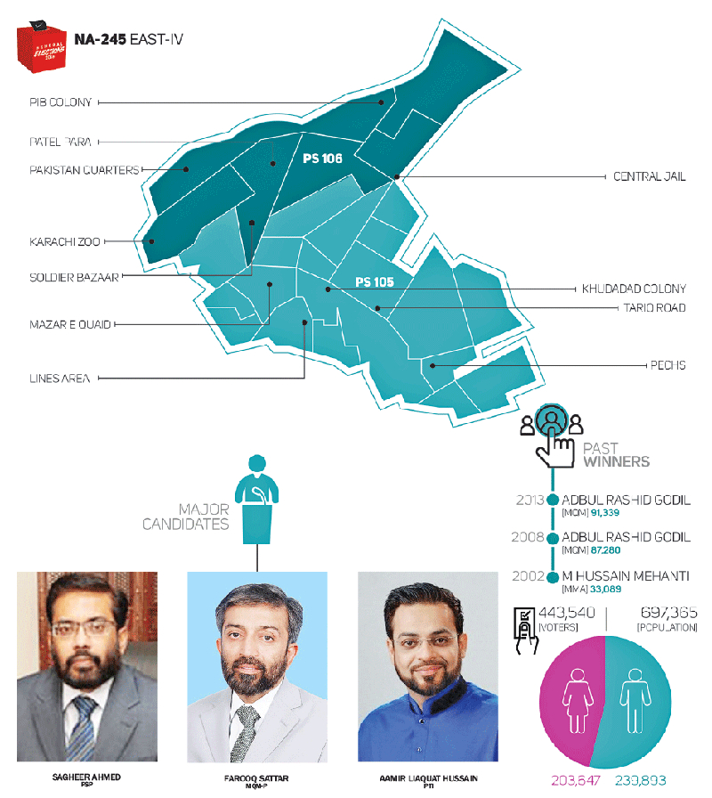

July 23, 2018
As all bets are off in NA-245, can MQM still pull a hat-trick?
With Zubair Ashraf and Arshad Yousafzai
© Faraz Maqbool
On the delimitation map, Karachi’s NA-245 (East-IV) is highlighted in chartreuse, contrary to its real picture that fancies red, black, white and green since Partition. And if Karachi is the melting pot of Pakistani society, this National Assembly constituency is possibly a glimpse of it.
A resident count of 697,365 makes it the second least populated electoral unit in District East, where 64 per cent of the locals (54 per cent men and 46 per cent women) are registered voters. NA-245, which comprises the provincial assembly constituencies PS-105 (East-VII) and PS-106 (East-VIII), was drawn from then NA-252.
With Esa Nagri in the north and PECHS Block-5 in the south, it covers the Askari Amusement Park, PIB Colony, Hyderabad Colony, Martin Quarters, Clayton Quarters, New Town, Patel Para, Lasbela Chowk, Garden West, Garden East, Soldier Bazaar, Nishtar Park, Khudadad Colony, Kashmir Road, Tariq Road, Nursery, Lines Area, Jacob Lines, Abyssinia Lines and SMCHS.
It has traditionally been a stronghold of the Muttahida Qaumi Movement (MQM), with the party winning the NA seat in the past two general elections, but previous voter trends and the present political scene have apparently made it challenging for the MQM-Pakistan to pull a hat-trick.
In 2002 the MQM lost this seat to the Muttahida Majlis-e-Amal (MMA), and in 2013 the Pakistan Tehreek-e-Insaf (PTI) made a surprising chase. With new players such as the Pak Sarzameen Party (PSP) and the Tehreek-e-Labbaik Pakistan (TLP) entering the fray, a hotter race is expected this time round.
This constituency is vibrant in terms of ethnicity as well as religion, as it boasts centres of four major sects, namely Shias, Ismailis, Deobandis and Barelvis. Though Mohajirs make up most of the populace here, there are considerable numbers of Sindhi, Baloch, Pathan, Memon, Gujrati and Punjabi residents as well.
A total of 15 candidates, including six independents, are vying for the NA-245 seat. The prominent contenders include the MQM-P’s Dr Farooq Sattar, the PTI’s Dr Aamir Liaquat Hussain, the MMA’s Saifuddin, the PSP’s Dr Sagheer Ahmed, the Pakistan Muslim League-Nawaz’s (PML-N) Khawaja Tariq Nazir and the Pakistan Peoples Party’s (PPP) Advocate Farrukh Niaz Tanoli.
The MQM-P’s Faisal Rafiq and Muhammad Zahid, the PTI’s Muhammad Ali Aziz and Jamal Uddin Siddiqui, the MMA’s Sarwar Ali and Muhammad Aslam Ghori, the PSP’s Mehmood Abdul Razzaque and Syed Qamar Akhtar Naqvi, the PML-N’s Tariq Mahmood and Muhammad Tahir Shehzada, and the PPP’s Zulfiqar Ali Kaim Khani and Shehzad Natha are contesting for the PS-105 and PS-106 seats, which have a total of 36 contenders: 17 candidates including eight independents for PS-105 and 19 candidates including 10 independents for PS-106.
MQM versus PSP
According to election observers, the contest in this constituency is predominantly between the MQM-P and the PSP. The rest of the parties do not seem to be in a position to win, although they can split the votes.
Local journalist Najam Soharwardi said the constituency is the home ground of Farooq Sattar and Sagheer Ahmed, and they both enjoy substantial support from the locals. The PSP candidate was elected MPA on an MQM ticket thrice in a row.
Despite the MQM and PSP’s popularity, added Soharwardi, the TLP is an emerging political force that is banking on the Barelvi vote, which is in abundance here.
Sattar, however, hopes his party can secure a significant number of votes again. Accusing the PPP of not letting the local bodies function during the past decade of its Sindh government, he said his party has presented a way out.
He said his party will campaign for the creation of a new province in Sindh, claiming that only then will the urban population get their due rights.
But PSP leader Saleem Tajik said the people of the constituency have no room for the MQM-P because the people have lost confidence in it.
He claimed that a major split still exists between the MQM-P’s PIB Colony and Bahadurabad factions, which the PSP will take advantage of to win the NA seat.
Ismaili vote bank
Five years ago, in the race for NA-252, Ismailis voted for the PTI in large numbers, even though they were openly threatened with dire consequences allegedly by the MQM. And they still remember the apparent backlash for their defiance, which, they believe, put a target on their back.
Traditionally, Ismailis in this constituency have cast their ballots in favour of the MQM and the PPP. But as the PTI’s popularity soared across the country in the months leading up to the 2013 general elections, the community’s vote has split three ways since.
The PTI has also reportedly made an agreement with the Majlis-e-Wahdat-e-Muslimeen for the 2018 polls to secure the Shia vote from different localities dominated by the community, including the Soldier Bazaar area in Garden East.
But like Shias, Ismailis do not vote en bloc. Even with the Ismaili vote now split three ways, the MQM and the PPP still hold considerable sway in the community. Nevertheless, the former has been reduced to a shadow of its former self and the latter is fast losing ground.
And the PTI had not only managed to draw out many first-time Ismaili voters in the 2013 elections, it had also ensured future votes in households with minors, who are now eligible and pumped up to vote this July 25.
PTI’s divisive choice
Besides other, stronger candidates and the already divided voters, if there is anyone who can hurt the PTI’s chances of winning the NA-245 seat, it is the party’s candidate himself.
There is little love for Aamir Liaquat Hussain in this constituency. His recent attempts at sweet-talking Ismailis into voting for the PTI can dent the party’s vote bank here because the community believes his statements have once again put a target on their back.
Other communities have similar views about Hussain. A constituent named Fahad Rizvi said that though the PTI had surprisingly gained a huge following here in the previous elections, the party’s choice of candidate this time round can divide its votes.
The PTI’s Karachi chief, however, disagrees. Firdous Shamim Naqvi said personalities do not matter because the party has its own ideological vote bank across the country.
Defending Hussain, he said that some rival political groups had spread an out-of-context video clip on social media, but propaganda cannot divide the PTI’s vote bank.
Hussain himself rejected the notion that his candidacy is dividing voters in NA-245. He claimed that he was welcomed in every locality under the constituency that he visited during his election campaign.
Other parties’ views
Khawaja Tariq Nazir of the PML-N claimed that the people of Karachi have rejected the ideologies of both the PTI and the PSP. He also said the PPP has a weak vote bank in some pockets of the constituency and is already out of the race.
However, Farrukh Niaz Tanoli of the PPP said the people of the city trust in the young leadership of the party. He also claimed that the MQM-P has been winning this seat by rigging.
And Jamaat-e-Islami Information Secretary Zahid Askari said the locals are disappointed in the past winners, claiming that the people are now relying on religious parties, especially the MMA, which has a good reputation here.
First published in The News International